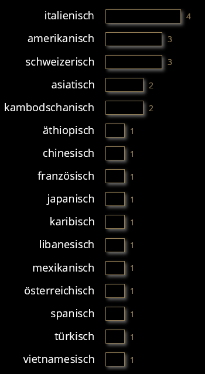

Seit dem 21. Novemeber 2021 bis heute haben neben der Gründungsversammlung
- 21 Monatsessen
- 2 Vereinsausflüge und
- 2 Generalversammlungen
stattgefunden. Erst ein einziger offizieller Termin fiel mangels Teilnehmer aus. Keep it up!
Wir Gourmen sind Geschmacksentdecker und lieben die Küche aus aller Welt. Hier unsere Hitlist:
